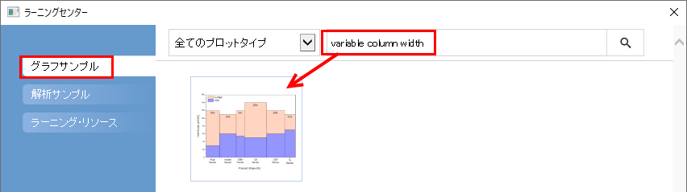
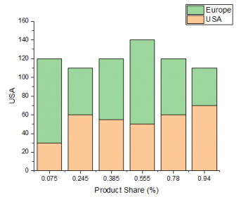
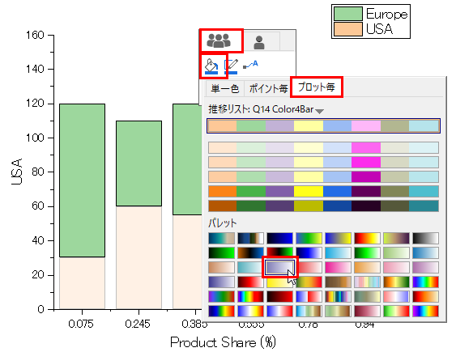
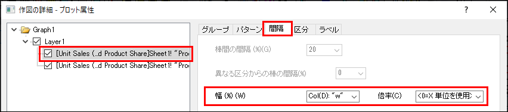
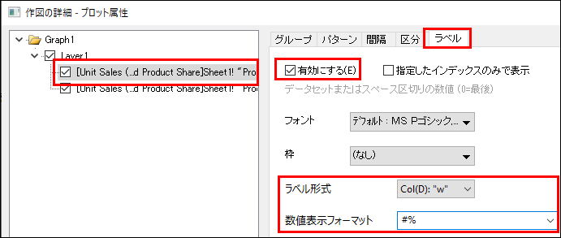
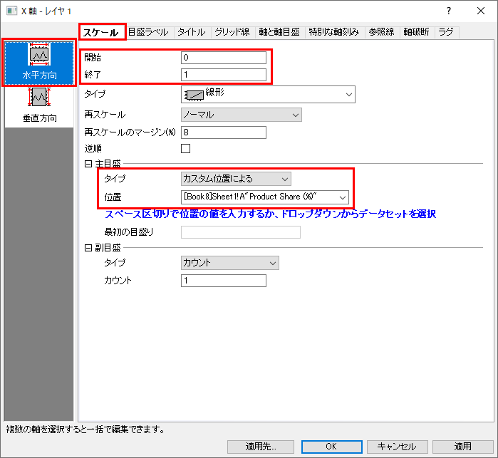
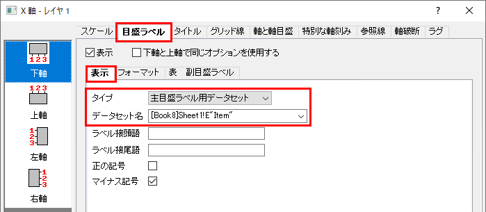
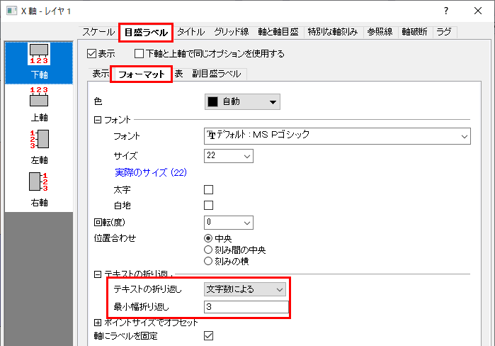
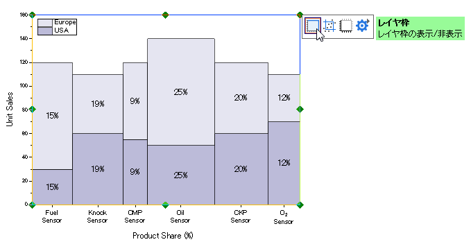
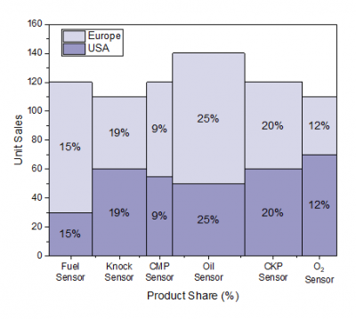

変数による棒の幅
VariableColumnWidth
概要
Originはデータセットにより棒の幅をコントロールすることができます。倍率が0の場合、データセットの値がX軸スケール値を参照して棒の幅を決定します。

必要なOriginのバージョン: Origin 2020 以降
学習する項目
このチュートリアルでは、以下の項目について説明します。
- 積み上げ棒グラフを作図する
- 縦棒の幅を変数で設定し、ラベルを付ける
- 軸目盛と目盛ラベルを編集する
ステップ
このチュートリアルは、グラフサンプルのColumn and Bar Charts - Variable Column Widthに関連しています。
- メニューからヘルプ：ラーニングセンターを選択して、ラーニングセンターダイアログを開きます。ラーニングセンターダイアログの左側でグラフサンプルタブを選択し、キーワード「variable column width」を入力してサンプルを検索します。サンプルリストは次のようになります。
- 
- グラフアイコンをダブルクリックして開きます。開いたプロジェクトフォルダのワークブックUnit Sales (x1000) and Product Shareをアクティブにして、列BとCを選択してからメニューの作図> 棒、円、面積: 積み上げ縦棒を選択し、積み上げ縦棒グラフを作図します。
- 
- プロットをクリックしてミニツールバーを開き、グループタブの塗り色ボタン
 をクリックして、パレットLit LT Purple を指定し、塗り色を変更します。もちろん、ほかのパレットを指定しても構いません。
をクリックして、パレットLit LT Purple を指定し、塗り色を変更します。もちろん、ほかのパレットを指定しても構いません。
- 
- プロット上でダブルクリックして、作図の詳細（プロット属性）ダイアログを開きます。棒の間隔タブを開き、幅（％）をCol(D): "w" にし、倍率を<0=X単位を使用>に設定します。
- 
- ラベルタブを開き、有効にするチェックを付けます。ラベル形式には Col(D): "w"、数値表示フォーマットには#% を設定します。
- 
- OKをクリックして、ダイアログを閉じます。
- X軸をダブルクリックして、軸ダイアログボックスを開きます。
- スケールタブでの左パネルで水平方向アイコンをクリックして、開始と終了をそれぞれ0 と1 に設定します。主目盛のタイプをカスタム位置によるに設定して、位置を[Book8]Sheet1!A"Product Share (%)"に設定します。
- 
- 目盛ラベルタブを開き、表示サブタブ内で、タイプを主目盛ラベル用文字列にし、データセット名を[Book8]Sheet1!E"Item」 に設定します。
- 
- フォーマットサブタブを開き、テキストの折り返しを文字数によるにし、最小幅折り返しを3 に設定します。
- 
- OKをクリックして、ダイアログを閉じます。
- Y 軸タイトルをダブルクリックしてUnit Salesに変更します。 レイヤ内の何もない領域でクリックしてミニツールバーを開き、レイヤ枠ボタン
 をクリックしてレイヤ枠を表示します。
をクリックしてレイヤ枠を表示します。
- 
- 凡例を右クリックし、ショートカットメニューからオブジェクトの表示属性を選びます。凡例が一行で表示されるように編集します。グラフは次のようになります。
- 